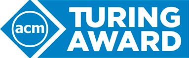
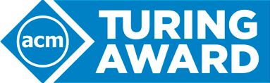

De A.M. Turing Award wordt algemeen gezien als de hoogste onderscheiding in de informatica. Het wordt ook wel de "Nobelprijs voor de informatica" genoemd. De prijs is genoemd naar Alan Turing. Sinds 2007 wordt de Turing Award gesponsord door Intel en Google, waardoor ze vergezeld gaat van een geldprijs van 1.000.000 dollar (ongeveer €800.000). De onderscheiding wordt toegekend door de Association for Computing Machinery (ACM) aan een persoon op grond van zijn technische bijdrage aan de informaticagemeenschap. De bijdrage moet van duurzaam en fundamenteel belang zijn voor de computerwereld.
 
